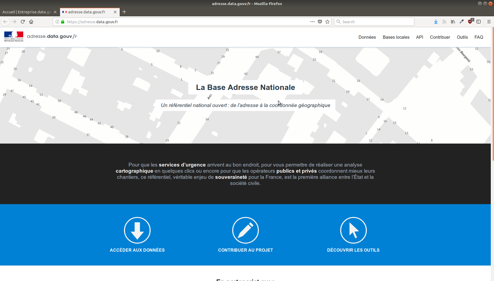
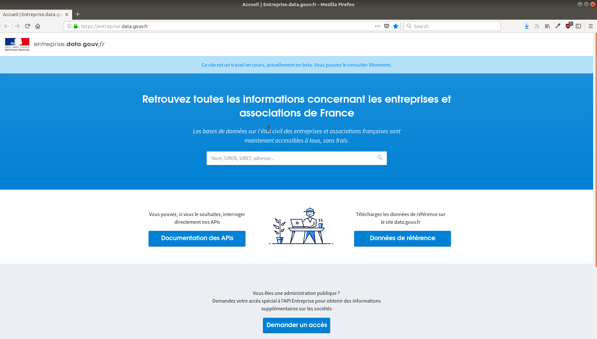

Paul-Antoine Chevalier
La loi pour une République numérique définit le service public de la donnée

La loi pour une République numérique acte le principe d’open data par défaut :
7 octobre 2018 : Obligation de diffuser les données dans un standard ouvert et aisément réutilisable les bases de données mises à jour de façon régulière et les données, mises à jour de façon régulière, présentant un intérêt économique, social, sanitaire ou environnemental.




